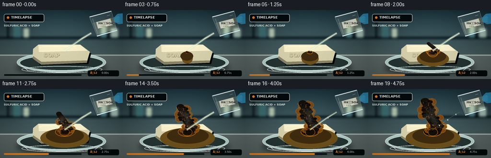
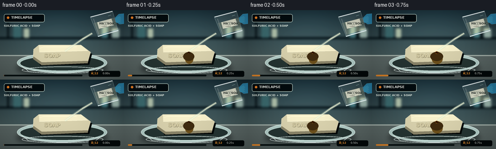
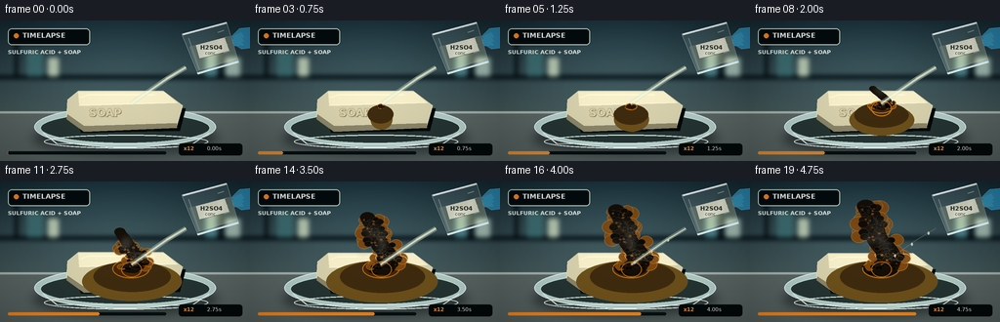
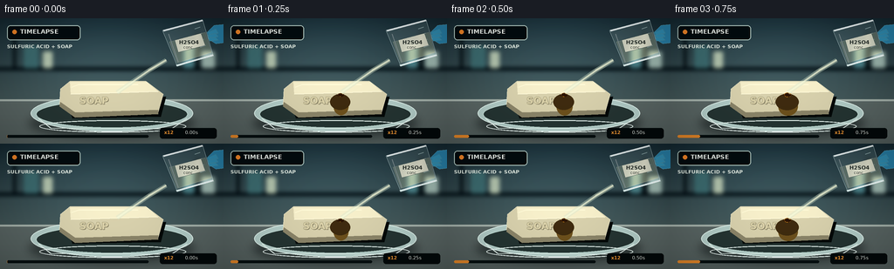

CODING AGENTS AS PIXEL WORLD MODELS
traex/GPT-5.6-Sol · material_0042
点击播放 · 原生 RGB 像素
逐轮保存的候选
回放视频、检查图与代码变化。
每份候选均可单独播放。实际图片检查记录在下方工具轨迹中。
候选 01播放与检查图
点击播放 · 原生 RGB 像素

展开代码变化
--- 上一保存版本
+++ 本次保存版本
@@ -0,0 +1,279 @@
+from pathlib import Path
+import math, random
+import numpy as np
+from PIL import Image, ImageDraw, ImageFont, ImageFilter
+import artifact_io
+
+W,H,N,S = 256,144,20,4
+SS=3
+random.seed(42)
+FONT='/usr/share/fonts/truetype/dejavu/DejaVuSans.ttf'
+FONTB='/usr/share/fonts/truetype/dejavu/DejaVuSans-Bold.ttf'
+
+def sc(v): return int(round(v*SS))
+def pts(seq): return [(sc(x),sc(y)) for x,y in seq]
+def font(size,b=False): return ImageFont.truetype(FONTB if b else FONT, sc(size))
+
+def ellipse(d, box, **kw): d.ellipse(tuple(sc(x) for x in box), **kw)
+def polygon(d, xy, **kw): d.polygon(pts(xy), **kw)
+def line(d, xy, **kw):
+ if 'width' in kw: kw['width']=sc(kw['width'])
+ d.line(pts(xy), **kw)
+def rr(d, box, radius, **kw): d.rounded_rectangle(tuple(sc(x) for x in box), radius=sc(radius), **kw)
+
+def alpha_layer(im): return Image.new('RGBA',im.size,(0,0,0,0))
+def comp(im,lay): return Image.alpha_composite(im.convert('RGBA'),lay)
+
+# Stable reaction lobes / pores
+rng=np.random.default_rng(815)
+foam=[]
+for j in range(54):
+ foam.append((rng.uniform(-1,1),rng.uniform(0,1),rng.uniform(2,6),rng.uniform(0,1)))
+pores=[]
+for j in range(100): pores.append((rng.uniform(-1,1),rng.uniform(0,1),rng.uniform(.45,1.5),rng.uniform(0,1)))
+droplets=[(rng.uniform(-1,1),rng.uniform(0,1),rng.uniform(.3,1.2),rng.uniform(0,6.28)) for _ in range(24)]
+
+
+def background():
+ h,w=H*SS,W*SS
+ y=np.arange(h)[:,None,None]
+ top=np.array([21,39,47])[None,None,:]
+ bot=np.array([73,91,91])[None,None,:]
+ t=np.minimum(y/(h*.76),1)
+ arr=np.tile((top*(1-t)+bot*t),(1,w,1)).astype(np.uint8)
+ # soft pool of cool lab light
+ X,Y=np.meshgrid(np.arange(w),np.arange(h))
+ glow=np.exp(-(((X-w*.47)/(w*.45))**2+((Y-h*.29)/(h*.42))**2))*30
+ arr=np.clip(arr+glow[...,None]*np.array([.55,.78,.83]),0,255).astype(np.uint8)
+ im=Image.fromarray(arr,'RGB').convert('RGBA')
+ d=ImageDraw.Draw(im,'RGBA')
+ # defocused laboratory shelving
+ d.rectangle((0,sc(56),sc(256),sc(60)),fill=(6,18,23,110))
+ d.rectangle((sc(15),sc(18),sc(18),sc(58)),fill=(5,15,19,80))
+ d.rectangle((sc(224),sc(16),sc(228),sc(60)),fill=(5,15,19,75))
+ for x,ww,hh,c in [(27,17,25,(62,107,111,45)),(49,11,19,(176,193,171,28)),(210,12,28,(77,130,137,36)),(231,15,19,(156,181,173,25))]:
+ d.rounded_rectangle((sc(x),sc(57-hh),sc(x+ww),sc(57)),radius=sc(2),fill=c)
+ im=im.filter(ImageFilter.GaussianBlur(sc(2.2)))
+ # sharp foreground counter
+ d=ImageDraw.Draw(im,'RGBA')
+ d.rectangle((0,sc(93),sc(256),sc(144)),fill=(91,103,101,255))
+ d.rectangle((0,sc(93),sc(256),sc(95)),fill=(162,174,167,90))
+ # foreground gradient overlay
+ ov=Image.new('RGBA',im.size,(0,0,0,0)); od=ImageDraw.Draw(ov,'RGBA')
+ for yy in range(94,145):
+ q=(yy-94)/50
+ od.rectangle((0,sc(yy),sc(256),sc(yy+1)),fill=(18,26,26,int(28*q)))
+ return comp(im,ov)
+
+
+def draw_dish(im):
+ # broad cast shadow
+ sh=alpha_layer(im); sd=ImageDraw.Draw(sh,'RGBA')
+ ellipse(sd,(33,104,223,137),fill=(2,9,10,115))
+ sh=sh.filter(ImageFilter.GaussianBlur(sc(5))); im=comp(im,sh)
+ d=ImageDraw.Draw(im,'RGBA')
+ ellipse(d,(35,88,221,130),fill=(177,202,197,30),outline=(220,239,233,150),width=sc(1))
+ ellipse(d,(41,94,215,126),fill=(40,55,53,55),outline=(192,218,211,80),width=sc(1))
+ line(d,[(44,115),(58,126),(196,127),(214,115)],fill=(225,242,235,100),width=1)
+ ellipse(d,(45,117,213,131),outline=(235,249,244,95),width=sc(1))
+ return im
+
+
+def soap_shape(im,p):
+ d=ImageDraw.Draw(im,'RGBA')
+ # deterioration/collapse progresses
+ sink=2.0*max(0,p-.35)
+ shape=[(69,81+sink),(80,72+sink),(167,72+sink),(187,87+sink),(181,108),(86,111),(68,99)]
+ # soap shadow
+ polygon(d,[(73,87),(190,90),(184,113),(83,115)],fill=(8,13,12,90))
+ polygon(d,shape,fill=(214,207,172,255),outline=(244,239,210,235))
+ polygon(d,[(69,96+sink),(86,108),(181,105),(181,110),(86,114),(68,101)],fill=(139,133,106,255))
+ polygon(d,[(80,73+sink),(168,73+sink),(181,84+sink),(81,87+sink)],fill=(244,237,201,245))
+ line(d,[(81,87+sink),(181,84+sink)],fill=(255,250,219,150),width=1)
+ # embossed soap stamp fades under reaction but stays initially visible
+ if p < .56:
+ tx,ty=sc(91),sc(88+sink)
+ d.text((tx+sc(.6),ty+sc(.7)),'SOAP',font=font(11,True),fill=(117,111,87,130))
+ d.text((tx,ty),'SOAP',font=font(11,True),fill=(218,209,170,150),stroke_width=sc(.25),stroke_fill=(148,141,109,80))
+ # small beveled grooves
+ line(d,[(82,79+sink),(90,76+sink),(158,76+sink)],fill=(255,250,217,120),width=1)
+ return im
+
+
+def wet_reaction(im,p,fi):
+ d=ImageDraw.Draw(im,'RGBA')
+ if p<=0: return im
+ # oily sulfuric slick spreading around soap
+ spread=min(1,p*1.5)
+ ellipse(d,(126-48*spread,91-10*spread,143+49*spread,111+13*spread),fill=(109,82,31,int(75*spread)))
+ ellipse(d,(122-30*spread,87-6*spread,145+34*spread,105+9*spread),fill=(65,46,19,int(110*spread)))
+ # impact crater turns amber then black
+ r=3+16*min(1,p*1.7)
+ ellipse(d,(134-r,87-r*.38,134+r,88+r*.58),fill=(73,40,11,240),outline=(183,118,26,175),width=sc(1))
+ rb=max(1,r*(p*.95))
+ ellipse(d,(134-rb,87-rb*.34,134+rb,88+rb*.5),fill=(17,14,10,245))
+ # radial scorched veins
+ for j in range(14):
+ ang=j*2*math.pi/14 + .15*math.sin(j)
+ ln=(5+15*p)*(0.65+(j%4)*.11)
+ x2=134+math.cos(ang)*ln; y2=88+math.sin(ang)*ln*.44
+ line(d,[(134,88),(x2,y2)],fill=(45,23,9,int(100+110*p)),width=max(1,int(2*p)))
+ return im
+
+
+def carbon_mass(im,p,fi):
+ if p<.16: return im
+ q=(p-.16)/.84
+ # rises dramatically and curls left, time-lapse expansion
+ top=87-62*(q**.82)
+ centerline=[]
+ steps=34
+ for k in range(steps):
+ u=k/(steps-1)
+ yy=88+(top-88)*u
+ xx=134 + 6*math.sin(u*4.5+q*.8) - 9*(u**1.8)*q + 3*math.sin(u*10)*q
+ centerline.append((xx,yy))
+ lay=alpha_layer(im); d=ImageDraw.Draw(lay,'RGBA')
+ # brown froth halo, then black porous char; lobes activate bottom-up
+ for idx,(a,u0,rad,jit) in enumerate(foam):
+ active=min(1,max(0,(q-u0*.52)/.20))
+ if active<=0: continue
+ u=min(.98, u0*(.78+.22*q))
+ ci=centerline[int(u*(steps-1))]
+ width=(15*(1-u*.45)+6*q)*(0.35+active*.65)
+ x=ci[0]+a*width + 2*math.sin(idx*2.2+fi*.11)*active
+ y=ci[1]+(jit-.5)*5
+ rr0=rad*(.45+.85*q)*active
+ # amber reactive foam on outside
+ ellipse(d,(x-rr0*1.25,y-rr0,x+rr0*1.25,y+rr0),fill=(128,73,17,235),outline=(215,141,42,130),width=sc(.6))
+ # main char trunk, broad and continuous
+ widths=[]
+ for k,(x,y) in enumerate(centerline):
+ u=k/(steps-1); widths.append(max(2,(10.5-3*u)*(0.3+.9*q)))
+ r=widths[-1]
+ ellipse(d,(x-r,y-r*.72,x+r,y+r*.72),fill=(24,18,12,255))
+ # black surface lobes
+ for idx,(a,u0,rad,jit) in enumerate(foam):
+ active=min(1,max(0,(q-u0*.60-.03)/.16))
+ if active<=0:return_later=False
+ if active<=0: continue
+ u=min(.99,u0*(.8+.2*q)); ci=centerline[int(u*(steps-1))]
+ width=(11*(1-u*.38)+4*q)
+ x=ci[0]+a*width; y=ci[1]+(jit-.5)*4
+ rr0=rad*(.35+.56*q)*active
+ col=(12+int(18*jit),10+int(11*jit),7+int(5*jit),245)
+ ellipse(d,(x-rr0,y-rr0*.72,x+rr0,y+rr0*.72),fill=col,outline=(73,44,17,180),width=sc(.45))
+ # porous pinholes and golden hot creases
+ for idx,(a,u,rad,jit) in enumerate(pores):
+ if u>q*1.22: continue
+ ci=centerline[int(min(.99,u)*(steps-1))]
+ wd=(9.5*(1-u*.35)+3*q)
+ x=ci[0]+a*wd*.82; y=ci[1]+(jit-.5)*5
+ col=(3,3,3,210) if idx%4 else (115,61,13,190)
+ ellipse(d,(x-rad,y-rad*.65,x+rad,y+rad*.65),fill=col)
+ # glowing reaction neck
+ ellipse(d,(124,82,145,98),outline=(225,138,27,170),width=sc(1))
+ return comp(im,lay)
+
+
+def steam(im,p,fi):
+ if p<.14:return im
+ q=(p-.14)/.86
+ lay=alpha_layer(im); d=ImageDraw.Draw(lay,'RGBA')
+ # drifting vapor curls, coherent in time
+ for j in range(9):
+ birth=j*.095
+ age=q-birth
+ if age<=0: continue
+ age=min(1,age)
+ base_x=131 + (j%3-1)*5
+ x=base_x + math.sin(age*4+j*1.7)*8 + (j%2*2-1)*age*7
+ y=79-age*(35+4*(j%4))
+ rx=3+age*7; ry=2+age*8
+ alpha=int(70*(1-age)*min(1,age*6))
+ ellipse(d,(x-rx,y-ry,x+rx,y+ry),fill=(219,227,215,alpha))
+ lay=lay.filter(ImageFilter.GaussianBlur(sc(3.2)))
+ return comp(im,lay)
+
+
+def beaker_and_pour(im,p,fi):
+ # stream is behind foreground glass, poured for most of clip, thinning at end
+ lay=alpha_layer(im); d=ImageDraw.Draw(lay,'RGBA')
+ start=(190,48); end=(134+math.sin(fi*.8)*.8,85)
+ flow=1 if p<.84 else max(.15,(1-p)/.16)
+ # stream glow + liquid core
+ line(d,[start,(170,60),end],fill=(210,227,204,int(90*flow)),width=max(1,int(5*flow)))
+ line(d,[start,(170,60),end],fill=(240,245,214,int(205*flow)),width=max(1,int(2*flow)))
+ # falling drops when stream reduces
+ if p>.78:
+ for j in range(3):
+ u=((fi*.27+j*.31)%1)
+ x=190+(end[0]-190)*u; y=48+(end[1]-48)*u
+ ellipse(d,(x-1,y-1.5,x+1,y+1.5),fill=(244,246,216,180))
+ im=comp(im,lay)
+ # tilted beaker (stylized laboratory glass with colorless acid)
+ glass=alpha_layer(im); g=ImageDraw.Draw(glass,'RGBA')
+ body=[(186,14),(232,2),(244,42),(203,55)]
+ polygon(g,body,fill=(198,229,226,35),outline=(223,247,245,210))
+ # acid volume meniscus
+ polygon(g,[(194,27),(235,16),(242,39),(203,51)],fill=(220,231,190,72),outline=(246,248,215,110))
+ line(g,[(187,14),(232,2)],fill=(246,255,255,230),width=2)
+ line(g,[(202,54),(244,42)],fill=(238,255,253,225),width=2)
+ line(g,[(193,18),(204,50)],fill=(255,255,255,95),width=1)
+ # graduations
+ for j in range(4):
+ x=229+j*2.1; y=10+j*7
+ line(g,[(x,y),(x-6,y+2)],fill=(216,242,239,145),width=1)
+ # label
+ polygon(g,[(200,25),(230,17),(235,31),(204,39)],fill=(239,238,216,215),outline=(76,92,87,160))
+ g.text((sc(205),sc(24)),'HâSOâ',font=font(6,True),fill=(38,45,41,240))
+ g.text((sc(210),sc(30.5)),'conc.',font=font(4.7),fill=(52,58,54,230))
+ im=comp(im,glass)
+ # gloved hand at right gripping beaker
+ hand=alpha_layer(im); hd=ImageDraw.Draw(hand,'RGBA')
+ polygon(hd,[(256,7),(245,8),(237,16),(239,24),(247,29),(256,28)],fill=(42,126,164,255),outline=(104,192,218,210))
+ for j in range(3):
+ polygon(hd,[(247,12+j*5),(238,16+j*3),(240,20+j*3),(250,17+j*4)],fill=(51,144,181,245),outline=(111,200,221,140))
+ return comp(im,hand)
+
+
+def overlay(im,fi):
+ d=ImageDraw.Draw(im,'RGBA')
+ # documentary header, unobtrusive
+ rr(d,(8,8,92,25),4,fill=(7,15,18,165),outline=(182,205,197,50),width=sc(1))
+ ellipse(d,(14,13,19,18),fill=(238,132,42,255))
+ d.text((sc(23),sc(11)),'TIMELAPSE',font=font(7,True),fill=(239,244,237,245))
+ d.text((sc(8),sc(29)),'SULFURIC ACID + SOAP',font=font(5.7,True),fill=(225,234,225,205))
+ # timecode / progress
+ rr(d,(183,126,248,138),3,fill=(7,13,14,145))
+ t=fi/4
+ d.text((sc(188),sc(128)),'Ã12',font=font(5.5,True),fill=(239,151,54,245))
+ d.text((sc(212),sc(128)),f'{t:04.2f}s',font=font(5.5),fill=(239,242,235,235))
+ # progress bar
+ rr(d,(8,134,170,137),1.5,fill=(10,18,19,120))
+ rr(d,(8,134,8+162*(fi/(N-1)),137),1.5,fill=(225,134,43,210))
+ return im
+
+frames=[]
+base=background()
+for fi in range(N):
+ p=fi/(N-1)
+ # smooth reaction time: slight delay, accelerated middle
+ rp=max(0,(p-.05)/.95)
+ rp=rp*rp*(3-2*rp)
+ im=base.copy()
+ im=draw_dish(im)
+ im=soap_shape(im,rp)
+ im=wet_reaction(im,rp,fi)
+ im=carbon_mass(im,rp,fi)
+ im=steam(im,rp,fi)
+ im=beaker_and_pour(im,p,fi)
+ im=overlay(im,fi)
+ im=im.convert('RGB').resize((W,H),Image.Resampling.LANCZOS)
+ # subtle filmic contrast/vignette
+ arr=np.asarray(im).astype(np.float32)
+ yy,xx=np.mgrid[0:H,0:W]; vig=1-0.12*((xx-W/2)/(W/2))**2-0.08*((yy-H/2)/(H/2))**2
+ arr=np.clip((arr-128)*1.035+128,0,255)*vig[...,None]
+ frames.append(np.clip(arr,0,255).astype(np.uint8))
+frames=np.stack(frames)
+artifact_io.save(frames,Path(__file__).resolve().parent)
候选 02播放与检查图
点击播放 · 原生 RGB 像素


展开代码变化
--- 上一保存版本
+++ 本次保存版本
@@ -45,7 +45,7 @@
X,Y=np.meshgrid(np.arange(w),np.arange(h))
glow=np.exp(-(((X-w*.47)/(w*.45))**2+((Y-h*.29)/(h*.42))**2))*30
arr=np.clip(arr+glow[...,None]*np.array([.55,.78,.83]),0,255).astype(np.uint8)
- im=Image.fromarray(arr,'RGB').convert('RGBA')
+ im=Image.fromarray(arr).convert('RGBA')
d=ImageDraw.Draw(im,'RGBA')
# defocused laboratory shelving
d.rectangle((0,sc(56),sc(256),sc(60)),fill=(6,18,23,110))
候选 03播放与检查图
点击播放 · 原生 RGB 像素


展开代码变化
--- 上一保存版本
+++ 本次保存版本
@@ -155,7 +155,6 @@
# black surface lobes
for idx,(a,u0,rad,jit) in enumerate(foam):
active=min(1,max(0,(q-u0*.60-.03)/.16))
- if active<=0:return_later=False
if active<=0: continue
u=min(.99,u0*(.8+.2*q)); ci=centerline[int(u*(steps-1))]
width=(11*(1-u*.38)+4*q)
@@ -226,7 +225,7 @@
line(g,[(x,y),(x-6,y+2)],fill=(216,242,239,145),width=1)
# label
polygon(g,[(200,25),(230,17),(235,31),(204,39)],fill=(239,238,216,215),outline=(76,92,87,160))
- g.text((sc(205),sc(24)),'HâSOâ',font=font(6,True),fill=(38,45,41,240))
+ g.text((sc(205),sc(24)),'H2SO4',font=font(6,True),fill=(38,45,41,240))
g.text((sc(210),sc(30.5)),'conc.',font=font(4.7),fill=(52,58,54,230))
im=comp(im,glass)
# gloved hand at right gripping beaker
@@ -247,7 +246,7 @@
# timecode / progress
rr(d,(183,126,248,138),3,fill=(7,13,14,145))
t=fi/4
- d.text((sc(188),sc(128)),'Ã12',font=font(5.5,True),fill=(239,151,54,245))
+ d.text((sc(188),sc(128)),'x12',font=font(5.5,True),fill=(239,151,54,245))
d.text((sc(212),sc(128)),f'{t:04.2f}s',font=font(5.5),fill=(239,242,235,235))
# progress bar
rr(d,(8,134,170,137),1.5,fill=(10,18,19,120))
可观测工具轨迹
实际执行的命令与返回图片。
命令 1exit 0
/bin/bash -lc "cat prompt.txt && printf '\\n---RULES---\\n' && cat GENERATION_RULES.md && printf '\\n---SPEC---\\n' && cat task_spec.json"
命令 2exit 0
/bin/bash -lc "find . -maxdepth 2 -type f -printf '%p\\n' | sort && printf '\\nTOOLS\\n' && command -v ffmpeg || true && command -v python3 || true"
命令 3exit 0
/bin/bash -lc 'cat artifact_io.py'
命令 4exit 0
/bin/bash -lc 'fc-list | head -10'
命令 5exit 0
/bin/bash -lc "cat > generate.py <<'PY'
from pathlib import Path
import math, random
import numpy as np
from PIL import Image, ImageDraw, ImageFont, ImageFilter
import artifact_io
W,H,N,S = 256,144,20,4
SS=3
random.seed(42)
FONT='/usr/share/fonts/truetype/dejavu/DejaVuSans.ttf'
FONTB='/usr/share/fonts/truetype/dejavu/DejaVuSans-Bold.ttf'
def sc(v): return int(round(v*SS))
def pts(seq): return [(sc(x),sc(y)) for x,y in seq]
def font(size,b=False): return ImageFont.truetype(FONTB if b else FONT, sc(size))
def ellipse(d, box, **kw): d.ellipse(tuple(sc(x) for x in box), **kw)
def polygon(d, xy, **kw): d.polygon(pts(xy), **kw)
def line(d, xy, **kw):
if 'width' in kw: kw['width']=sc(kw['width'])
d.line(pts(xy), **kw)
def rr(d, box, radius, **kw): d.rounded_rectangle(tuple(sc(x) for x in box), radius=sc(radius), **kw)
def alpha_layer(im): return Image.new('RGBA',im.size,(0,0,0,0))
def comp(im,lay): return Image.alpha_composite(im.convert('RGBA'),lay)
# Stable reaction lobes / pores
rng=np.random.default_rng(815)
foam=[]
for j in range(54):
foam.append((rng.uniform(-1,1),rng.uniform(0,1),rng.uniform(2,6),rng.uniform(0,1)))
pores=[]
for j in range(100): pores.append((rng.uniform(-1,1),rng.uniform(0,1),rng.uniform(.45,1.5),rng.uniform(0,1)))
droplets=[(rng.uniform(-1,1),rng.uniform(0,1),rng.uniform(.3,1.2),rng.uniform(0,6.28)) for _ in range(24)]
def background():
h,w=H*SS,W*SS
y=np.arange(h)[:,None,None]
top=np.array([21,39,47])[None,None,:]
bot=np.array([73,91,91])[None,None,:]
t=np.minimum(y/(h*.76),1)
arr=np.tile((top*(1-t)+bot*t),(1,w,1)).astype(np.uint8)
# soft pool of cool lab light
X,Y=np.meshgrid(np.arange(w),np.arange(h))
glow=np.exp(-(((X-w*.47)/(w*.45))**2+((Y-h*.29)/(h*.42))**2))*30
arr=np.clip(arr+glow[...,None]*np.array([.55,.78,.83]),0,255).astype(np.uint8)
im=Image.fromarray(arr,'RGB').convert('RGBA')
d=ImageDraw.Draw(im,'RGBA')
# defocused laboratory shelving
d.rectangle((0,sc(56),sc(256),sc(60)),fill=(6,18,23,110))
d.rectangle((sc(15),sc(18),sc(18),sc(58)),fill=(5,15,19,80))
d.rectangle((sc(224),sc(16),sc(228),sc(60)),fill=(5,15,19,75))
for x,ww,hh,c in [(27,17,25,(62,107,111,45)),(49,11,19,(176,193,171,28)),(210,12,28,(77,130,137,36)),(231,15,19,(156,181,173,25))]:
d.rounded_rectangle((sc(x),sc(57-hh),sc(x+ww),sc(57)),radius=sc(2),fill=c)
im=im.filter(ImageFilter.GaussianBlur(sc(2.2)))
# sharp foreground counter
d=ImageDraw.Draw(im,'RGBA')
d.rectangle((0,sc(93),sc(256),sc(144)),fill=(91,103,101,255))
d.rectangle((0,sc(93),sc(256),sc(95)),fill=(162,174,167,90))
# foreground gradient overlay
ov=Image.new('RGBA',im.size,(0,0,0,0)); od=ImageDraw.Draw(ov,'RGBA')
for yy in range(94,145):
q=(yy-94)/50
od.rectangle((0,sc(yy),sc(256),sc(yy+1)),fill=(18,26,26,int(28*q)))
return comp(im,ov)
def draw_dish(im):
# broad cast shadow
sh=alpha_layer(im); sd=ImageDraw.Draw(sh,'RGBA')
ellipse(sd,(33,104,223,137),fill=(2,9,10,115))
sh=sh.filter(ImageFilter.GaussianBlur(sc(5))); im=comp(im,sh)
d=ImageDraw.Draw(im,'RGBA')
ellipse(d,(35,88,221,130),fill=(177,202,197,30),outline=(220,239,233,150),width=sc(1))
ellipse(d,(41,94,215,126),fill=(40,55,53,55),outline=(192,218,211,80),width=sc(1))
line(d,[(44,115),(58,126),(196,127),(214,115)],fill=(225,242,235,100),width=1)
ellipse(d,(45,117,213,131),outline=(235,249,244,95),width=sc(1))
return im
def soap_shape(im,p):
d=ImageDraw.Draw(im,'RGBA')
# deterioration/collapse progresses
sink=2.0*max(0,p-.35)
shape=[(69,81+sink),(80,72+sink),(167,72+sink),(187,87+sink),(181,108),(86,111),(68,99)]
# soap shadow
polygon(d,[(73,87),(190,90),(184,113),(83,115)],fill=(8,13,12,90))
polygon(d,shape,fill=(214,207,172,255),outline=(244,239,210,235))
polygon(d,[(69,96+sink),(86,108),(181,105),(181,110),(86,114),(68,101)],fill=(139,133,106,255))
polygon(d,[(80,73+sink),(168,73+sink),(181,84+sink),(81,87+sink)],fill=(244,237,201,245))
line(d,[(81,87+sink),(181,84+sink)],fill=(255,250,219,150),width=1)
# embossed soap stamp fades under reaction but stays initially visible
if p < .56:
tx,ty=sc(91),sc(88+sink)
d.text((tx+sc(.6),ty+sc(.7)),'SOAP',font=font(11,True),fill=(117,111,87,130))
d.text((tx,ty),'SOAP',font=font(11,True),fill=(218,209,170,150),stroke_width=sc(.25),stroke_fill=(148,141,109,80))
# small beveled grooves
line(d,[(82,79+sink),(90,76+sink),(158,76+sink)],fill=(255,250,217,120),width=1)
return im
def wet_reaction(im,p,fi):
d=ImageDraw.Draw(im,'RGBA')
if p<=0: return im
# oily sulfuric slick spreading around soap
spread=min(1,p*1.5)
ellipse(d,(126-48*spread,91-10*spread,143+49*spread,111+13*spread),fill=(109,82,31,int(75*spread)))
ellipse(d,(122-30*spread,87-6*spread,145+34*spread,105+9*spread),fill=(65,46,19,int(110*spread)))
# impact crater turns amber then black
r=3+16*min(1,p*1.7)
ellipse(d,(134-r,87-r*.38,134+r,88+r*.58),fill=(73,40,11,240),outline=(183,118,26,175),width=sc(1))
rb=max(1,r*(p*.95))
ellipse(d,(134-rb,87-rb*.34,134+rb,88+rb*.5),fill=(17,14,10,245))
# radial scorched veins
for j in range(14):
ang=j*2*math.pi/14 + .15*math.sin(j)
ln=(5+15*p)*(0.65+(j%4)*.11)
x2=134+math.cos(ang)*ln; y2=88+math.sin(ang)*ln*.44
line(d,[(134,88),(x2,y2)],fill=(45,23,9,int(100+110*p)),width=max(1,int(2*p)))
return im
def carbon_mass(im,p,fi):
if p<.16: return im
q=(p-.16)/.84
# rises dramatically and curls left, time-lapse expansion
top=87-62*(q**.82)
centerline=[]
steps=34
for k in range(steps):
u=k/(steps-1)
yy=88+(top-88)*u
xx=134 + 6*math.sin(u*4.5+q*.8) - 9*(u**1.8)*q + 3*math.sin(u*10)*q
centerline.append((xx,yy))
lay=alpha_layer(im); d=ImageDraw.Draw(lay,'RGBA')
# brown froth halo, then black porous char; lobes activate bottom-up
for idx,(a,u0,rad,jit) in enumerate(foam):
active=min(1,max(0,(q-u0*.52)/.20))
if active<=0: continue
u=min(.98, u0*(.78+.22*q))
ci=centerline[int(u*(steps-1))]
width=(15*(1-u*.45)+6*q)*(0.35+active*.65)
x=ci[0]+a*width + 2*math.sin(idx*2.2+fi*.11)*active
y=ci[1]+(jit-.5)*5
rr0=rad*(.45+.85*q)*active
# amber reactive foam on outside
ellipse(d,(x-rr0*1.25,y-rr0,x+rr0*1.25,y+rr0),fill=(128,73,17,235),outline=(215,141,42,130),width=sc(.6))
# main char trunk, broad and continuous
widths=[]
for k,(x,y) in enumerate(centerline):
u=k/(steps-1); widths.append(max(2,(10.5-3*u)*(0.3+.9*q)))
r=widths[-1]
ellipse(d,(x-r,y-r*.72,x+r,y+r*.72),fill=(24,18,12,255))
# black surface lobes
for idx,(a,u0,rad,jit) in enumerate(foam):
active=min(1,max(0,(q-u0*.60-.03)/.16))
if active<=0:return_later=False
if active<=0: continue
u=min(.99,u0*(.8+.2*q)); ci=centerline[int(u*(steps-1))]
width=(11*(1-u*.38)+4*q)
x=ci[0]+a*width; y=ci[1]+(jit-.5)*4
rr0=rad*(.35+.56*q)*active
col=(12+int(18*jit),10+int(11*jit),7+int(5*jit),245)
ellipse(d,(x-rr0,y-rr0*.72,x+rr0,y+rr0*.72),fill=col,outline=(73,44,17,180),width=sc(.45))
# porous pinholes and golden hot creases
for idx,(a,u,rad,jit) in enumerate(pores):
if u>q*1.22: continue
ci=centerline[int(min(.99,u)*(steps-1))]
wd=(9.5*(1-u*.35)+3*q)
x=ci[0]+a*wd*.82; y=ci[1]+(jit-.5)*5
col=(3,3,3,210) if idx%4 else (115,61,13,190)
ellipse(d,(x-rad,y-rad*.65,x+rad,y+rad*.65),fill=col)
# glowing reaction neck
ellipse(d,(124,82,145,98),outline=(225,138,27,170),width=sc(1))
return comp(im,lay)
def steam(im,p,fi):
if p<.14:return im
q=(p-.14)/.86
lay=alpha_layer(im); d=ImageDraw.Draw(lay,'RGBA')
# drifting vapor curls, coherent in time
for j in range(9):
birth=j*.095
age=q-birth
if age<=0: continue
age=min(1,age)
base_x=131 + (j%3-1)*5
x=base_x + math.sin(age*4+j*1.7)*8 + (j%2*2-1)*age*7
y=79-age*(35+4*(j%4))
rx=3+age*7; ry=2+age*8
alpha=int(70*(1-age)*min(1,age*6))
ellipse(d,(x-rx,y-ry,x+rx,y+ry),fill=(219,227,215,alpha))
lay=lay.filter(ImageFilter.GaussianBlur(sc(3.2)))
return comp(im,lay)
def beaker_and_pour(im,p,fi):
# stream is behind foreground glass, poured for most of clip, thinning at end
lay=alpha_layer(im); d=ImageDraw.Draw(lay,'RGBA')
start=(190,48); end=(134+math.sin(fi*.8)*.8,85)
flow=1 if p<.84 else max(.15,(1-p)/.16)
# stream glow + liquid core
line(d,[start,(170,60),end],fill=(210,227,204,int(90*flow)),width=max(1,int(5*flow)))
line(d,[start,(170,60),end],fill=(240,245,214,int(205*flow)),width=max(1,int(2*flow)))
# falling drops when stream reduces
if p>.78:
for j in range(3):
u=((fi*.27+j*.31)%1)
x=190+(end[0]-190)*u; y=48+(end[1]-48)*u
ellipse(d,(x-1,y-1.5,x+1,y+1.5),fill=(244,246,216,180))
im=comp(im,lay)
# tilted beaker (stylized laboratory glass with colorless acid)
glass=alpha_layer(im); g=ImageDraw.Draw(glass,'RGBA')
body=[(186,14),(232,2),(244,42),(203,55)]
polygon(g,body,fill=(198,229,226,35),outline=(223,247,245,210))
# acid volume meniscus
polygon(g,[(194,27),(235,16),(242,39),(203,51)],fill=(220,231,190,72),outline=(246,248,215,110))
line(g,[(187,14),(232,2)],fill=(246,255,255,230),width=2)
line(g,[(202,54),(244,42)],fill=(238,255,253,225),width=2)
line(g,[(193,18),(204,50)],fill=(255,255,255,95),width=1)
# graduations
for j in range(4):
x=229+j*2.1; y=10+j*7
line(g,[(x,y),(x-6,y+2)],fill=(216,242,239,145),width=1)
# label
polygon(g,[(200,25),(230,17),(235,31),(204,39)],fill=(239,238,216,215),outline=(76,92,87,160))
g.text((sc(205),sc(24)),'HâSOâ',font=font(6,True),fill=(38,45,41,240))
g.text((sc(210),sc(30.5)),'conc.',font=font(4.7),fill=(52,58,54,230))
im=comp(im,glass)
# gloved hand at right gripping beaker
hand=alpha_layer(im); hd=ImageDraw.Draw(hand,'RGBA')
polygon(hd,[(256,7),(245,8),(237,16),(239,24),(247,29),(256,28)],fill=(42,126,164,255),outline=(104,192,218,210))
for j in range(3):
polygon(hd,[(247,12+j*5),(238,16+j*3),(240,20+j*3),(250,17+j*4)],fill=(51,144,181,245),outline=(111,200,221,140))
return comp(im,hand)
def overlay(im,fi):
d=ImageDraw.Draw(im,'RGBA')
# documentary header, unobtrusive
rr(d,(8,8,92,25),4,fill=(7,15,18,165),outline=(182,205,197,50),width=sc(1))
ellipse(d,(14,13,19,18),fill=(238,132,42,255))
d.text((sc(23),sc(11)),'TIMELAPSE',font=font(7,True),fill=(239,244,237,245))
d.text((sc(8),sc(29)),'SULFURIC ACID + SOAP',font=font(5.7,True),fill=(225,234,225,205))
# timecode / progress
rr(d,(183,126,248,138),3,fill=(7,13,14,145))
t=fi/4
d.text((sc(188),sc(128)),'Ã12',font=font(5.5,True),fill=(239,151,54,245))
d.text((sc(212),sc(128)),f'{t:04.2f}s',font=font(5.5),fill=(239,242,235,235))
# progress bar
rr(d,(8,134,170,137),1.5,fill=(10,18,19,120))
rr(d,(8,134,8+162*(fi/(N-1)),137),1.5,fill=(225,134,43,210))
return im
frames=[]
base=background()
for fi in range(N):
p=fi/(N-1)
# smooth reaction time: slight delay, accelerated middle
rp=max(0,(p-.05)/.95)
rp=rp*rp*(3-2*rp)
im=base.copy()
im=draw_dish(im)
im=soap_shape(im,rp)
im=wet_reaction(im,rp,fi)
im=carbon_mass(im,rp,fi)
im=steam(im,rp,fi)
im=beaker_and_pour(im,p,fi)
im=overlay(im,fi)
im=im.convert('RGB').resize((W,H),Image.Resampling.LANCZOS)
# subtle filmic contrast/vignette
arr=np.asarray(im).astype(np.float32)
yy,xx=np.mgrid[0:H,0:W]; vig=1-0.12*((xx-W/2)/(W/2))**2-0.08*((yy-H/2)/(H/2))**2
arr=np.clip((arr-128)*1.035+128,0,255)*vig[...,None]
frames.append(np.clip(arr,0,255).astype(np.uint8))
frames=np.stack(frames)
artifact_io.save(frames,Path(__file__).resolve().parent)
PY
python3 generate.py
ls -l pixels.npz inspection.png index.html frames/00.png frames/19.png"命令 6exit 0
/bin/bash -lc "python3 - <<'PY'
p='generate.py'
s=open(p).read().replace(\"'HâÂÂSOâÂÂ'\", \"'H2SO4'\").replace(\"Image.fromarray(arr,'RGB')\", \"Image.fromarray(arr)\")
open(p,'w').write(s)
PY
python3 generate.py
python3 - <<'PY'
import numpy as np
from PIL import Image
z=np.load('pixels.npz')['pixels']
print('packed tensor',z.shape,z.dtype,'unique frame0',len(np.unique(z[:,:,0])),'unique final',len(np.unique(z[:,:,-1])))
for i in [0,4,8,12,16,19]:
a=np.array(Image.open(f'frames/{i:02d}.png'))
print(i,a.shape,a.dtype,tuple(a.mean((0,1)).round(1)),float(np.abs(a.astype(int)-np.array(Image.open('frames/00.png')).astype(int)).mean()))
PY"命令 7exit 0
/bin/bash -lc "grep -n \"H2\\|HÃ\\|return_later\" generate.py; python3 - <<'PY'
from pathlib import Path
import numpy as np
from PIL import Image
# validate expected artifacts and exact RGB contract
files=list(Path('frames').glob('*.png'))
assert len(files)==20
for f in files:
im=Image.open(f)
assert im.mode=='RGB' and im.size==(256,144)
a=np.load('pixels.npz')['pixels']
assert a.shape==(144,256,20)
print('validation passed:',len(files),'RGB frames, html bytes',Path('index.html').stat().st_size)
PY"命令 8exit 0
/bin/bash -lc "sed -n '215,260p' generate.py"
命令 9exit 0
/bin/bash -lc "python3 - <<'PY'
p='generate.py'
lines=open(p,encoding='utf-8').readlines()
out=[]
for line in lines:
if \"g.text((sc(205),sc(24))\" in line:
line=\" g.text((sc(205),sc(24)),'H2SO4',font=font(6,True),fill=(38,45,41,240))\\n\"
elif \"d.text((sc(188),sc(128))\" in line:
line=\" d.text((sc(188),sc(128)),'x12',font=font(5.5,True),fill=(239,151,54,245))\\n\"
elif 'if active<=0:return_later=False' in line:
continue
out.append(line)
open(p,'w',encoding='utf-8').writelines(out)
PY
python3 generate.py
python3 - <<'PY'
from pathlib import Path
from PIL import Image
import numpy as np
assert len(list(Path('frames').glob('*.png')))==20
assert all(Image.open(x).mode=='RGB' and Image.open(x).size==(256,144) for x in Path('frames').glob('*.png'))
assert np.load('pixels.npz')['pixels'].shape==(144,256,20)
print('final artifacts validated')
PY
grep -n \"H2SO4\\|x12\" generate.py"保存候选 3 份；完成命令 9 次；可验证图片返回 0 张。原始 API 响应与完整日志保留在本地。